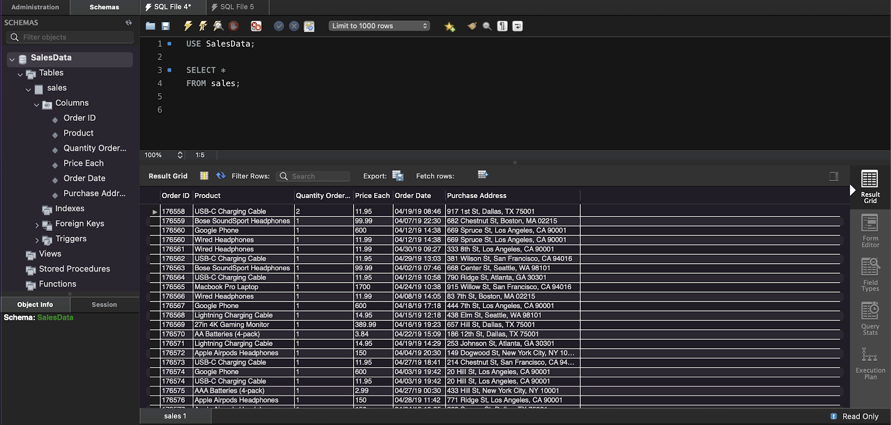
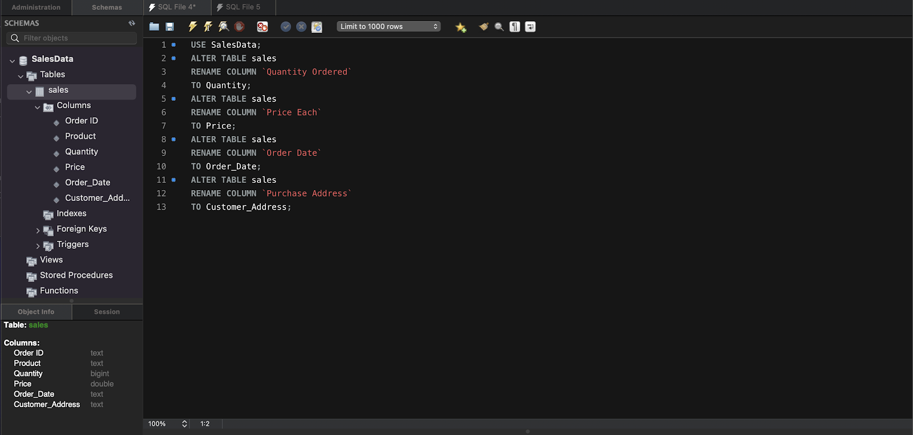
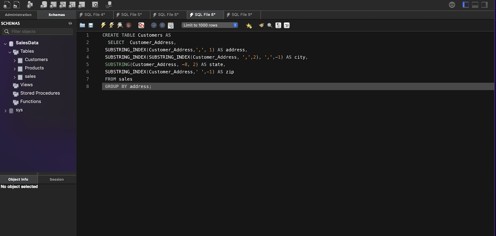
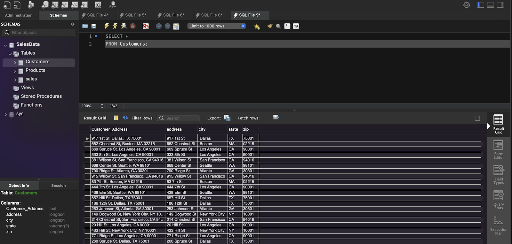

SQL Demo
Exploring Sales Data With SQL
In this demo, I’m using the MySQL Public server with MySQL Workbench on a MacBook. The data used in this demo is basic sales data found on Kaggle: Sales Product Data.
The import wizard in Workbench only imports one file at a time into a table, but the data came in 12 separate CSV files. To combine them, I used a simple shell script:
cd /folder/with/csv/files
cat *.csv > Sales_Data.csv
Here’s a first look at the data after it was imported into MySQL:
The dataset contains six columns: Order ID, Product, Quantity Ordered, Price Each, Order Date, and Purchase Address. Many of the column names include spaces, so it would be helpful to simplify the column names for easier querying and manipulation.
When examining the Product column from the first query, it’s clear that many products are repeated across multiple orders. The question now is: how many unique products are there, and how many of each product were sold?
This simple query, using the SUM function and GROUP BY clause, shows 19 unique products and sums the total quantity sold for each product:
It may be useful to store the results of this query in a separate table called “Products.” Since we have the price and total quantity of sales for each product, we can also add another column to calculate the gross sales for each product.
However, an error kept occurring with the GROUP BY clause due to the default SQL mode. Fortunately, by referencing the error code, I was able to quickly find a solution and successfully create the new Products table:
Checking the new table confirms that it was created as expected. This new Products table provides valuable insights into which products generate the highest and lowest gross sales.
Next, from the sales table, the only customer-related information is a single address column. To make the data more useful, it would be beneficial to break the address into separate fields: street address, city, state, and zip code. This can be done using the SUBSTRING_INDEX and SUBSTRING functions built into MySQL.
The previous query can now be stored in its own table called “Customers.” Normally, there would be a customer ID, but since the original sales table doesn’t include one, it makes sense to use the street address as the key. This key can refer back to the sales table, which contains order information.
 With just a few SQL queries, the data has been reorganized into separate tables for sales, products, and customers. Now, a LEFT JOIN can be used to aggregate the top 10 customers who spent the most money across multiple orders.
This has been a short demo demonstrating some basic SQL skills on a random dataset I found on Kaggle. It shows how a simple dataset can be reorganized and reformatted to make it more useful for analysis. Thank you for checking out my demo!